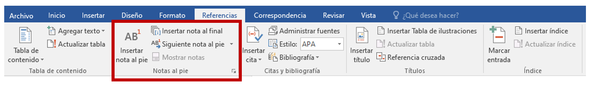
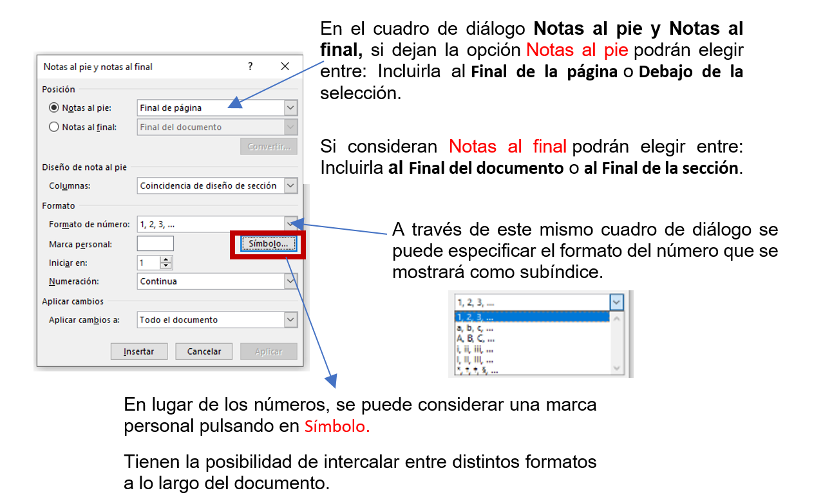

Notas al pie suele utilizarse para añadir información o alguna aclaración con respecto al texto desarrollado en la página. La nota al final es similar a la nota al pie y se tratan igual, la diferencia fundamental es que la nota al pie se pone al final de la página para aclarar algún punto y la nota al final se suele poner al final de un capítulo o bien al final del documento.
CREAR NOTA AL PIE
Para crear una nota al pie deberán seleccionar la palabra o frase a la cual le van a poner una nota y pulsan la opción Insertar nota al pie. Automáticamente se insertará y los llevará a la parte final de la página para establecer la información. Pero si desean configurar las notas deberán abrir el cuadro de diálogo de Notas al pie y notas al final haciendo clic en la flecha situada en la esquina inferior derecha del grupo Notas al pie.

Una vez definido el formato, pulsar el botón insertar para que tengan la posibilidad de establecer los datos para aclarar la información.